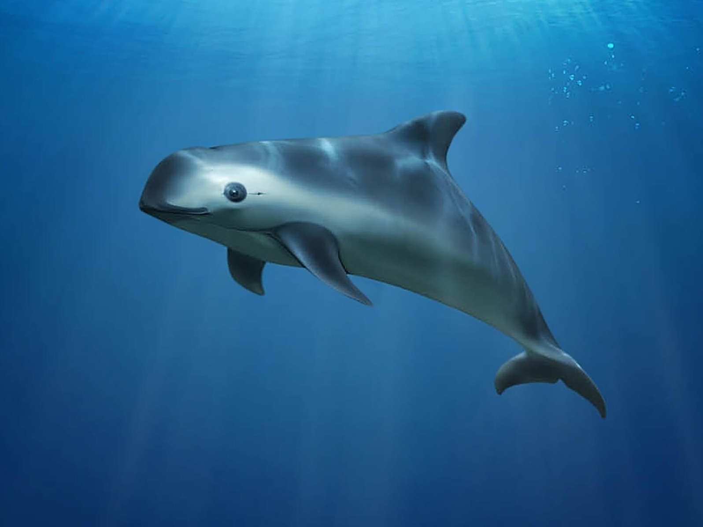

Animais marinhos em extição
Algumas espécies marinhas foram ou estão sendo instintas e um dos
principais causadores desse problema,somos nos seres humanos.
Poluição, pesca excessiva e a destruição de habitats naturais são
três das principais causas que afetam significativamente a vida dos
animais marinhos no planeta.
A seguir alguns animais que estão em instinção:
Tartaruga-de-pente
Encontrada nas regiões tropicais de todos os
VaquitaEncontrada nas regiões tropicais de todos os
Baleia-azul
Encontrada nas regiões tropicais de todos os
Tartaruga-de-kemp
Encontrada nas regiões tropicais de todos os